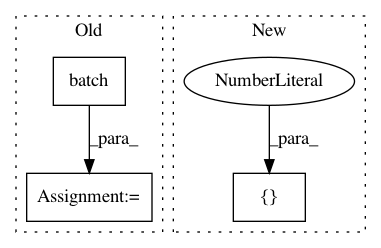

a3cd380d9b7758fb2de5a359e0f1c7094b2f1163,src/mjsynth.py,,threaded_input_pipeline,#Any#Any#Any#Any#Any#Any#,82
Before Change
with tf.device(batch_device): // Create batch queue
dataset = dataset.batch(batch_size)
dataset = dataset.map(lambda image,
width, label,
length, text,
After Change
(element_length_func=_element_length_fn,
bucket_batch_sizes=np.full
(len([32, 64, 96, 128, 160, 192, 224, 256]) + 1, batch_size),
bucket_boundaries=[32, 64, 96, 128, 160, 192, 224, 256]))
//dataset = dataset.padded_batch(batch_size, )
In pattern: SUPERPATTERN
Frequency: 3
Non-data size: 3
Instances
Project Name: weinman/cnn_lstm_ctc_ocr
Commit Name: a3cd380d9b7758fb2de5a359e0f1c7094b2f1163
Time: 2018-06-20
Author: am.lamsal@gmail.com
File Name: src/mjsynth.py
Class Name:
Method Name: threaded_input_pipeline
Project Name: tensorflow/models
Commit Name: 11e9c7adfbf7d50dd9ef4442cf7806cdb2ee2368
Time: 2017-11-17
Author: markdaoust@google.com
File Name: samples/core/get_started/premade_estimator.py
Class Name:
Method Name: main
Project Name: tensorflow/models
Commit Name: 11e9c7adfbf7d50dd9ef4442cf7806cdb2ee2368
Time: 2017-11-17
Author: markdaoust@google.com
File Name: samples/core/get_started/custom_estimator.py
Class Name:
Method Name: main